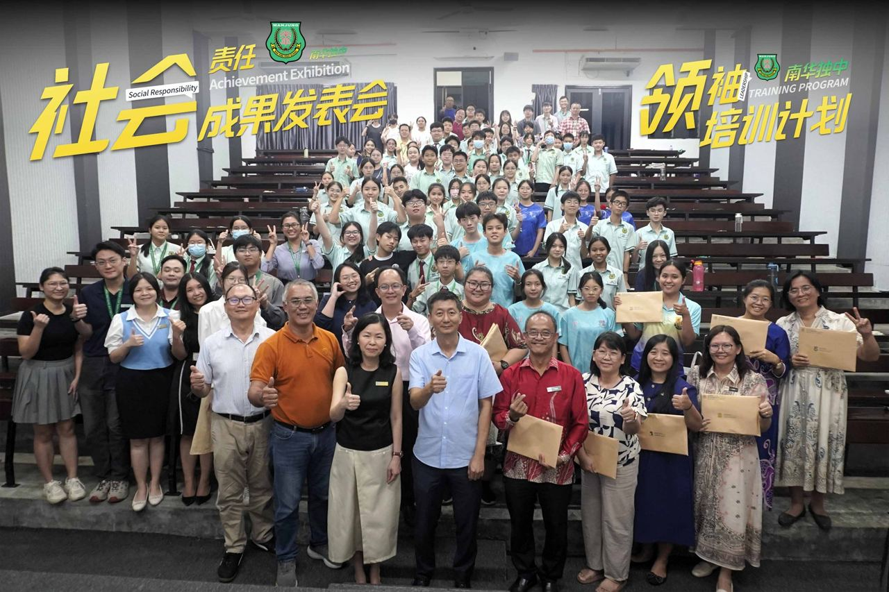
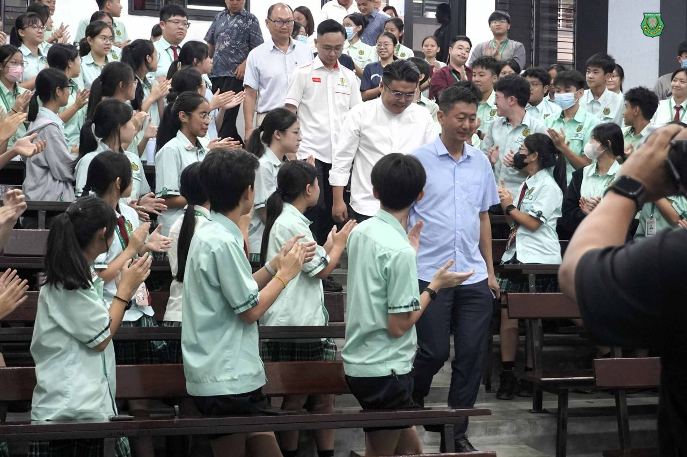
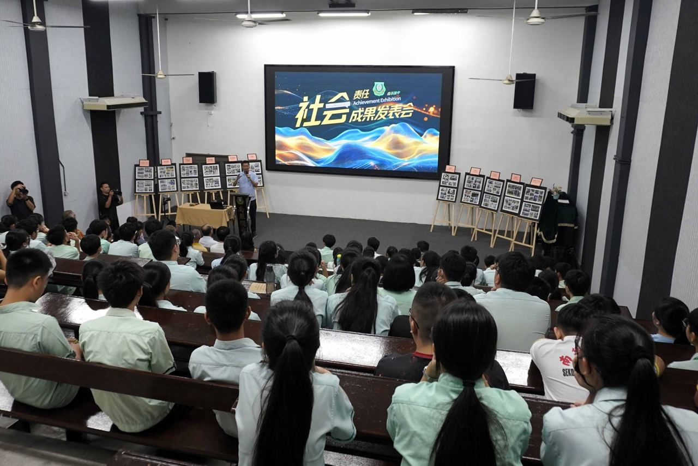
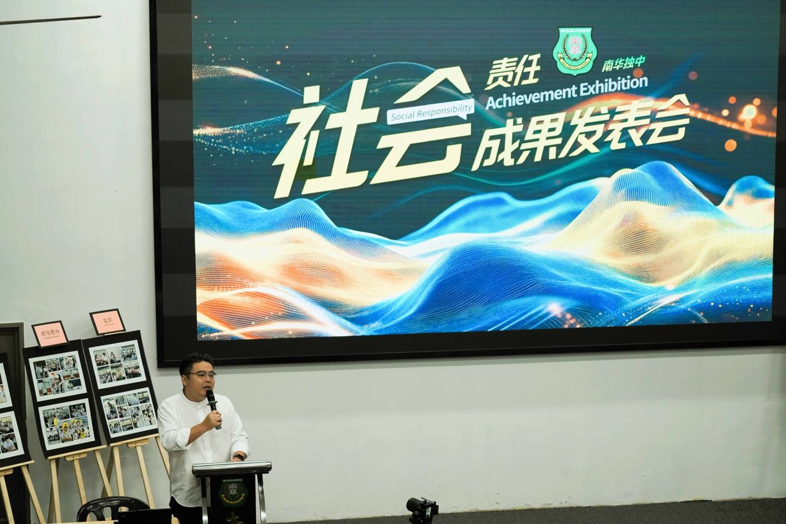
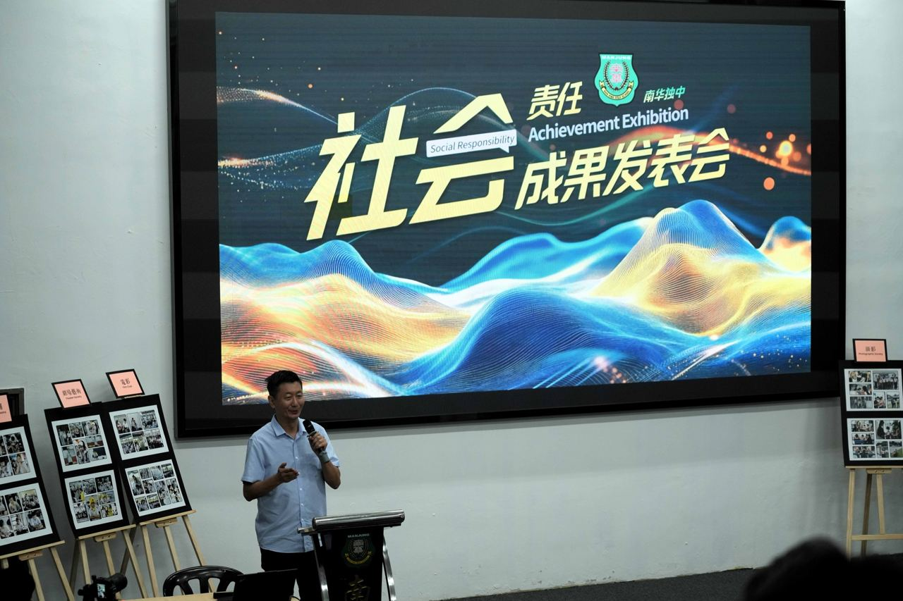
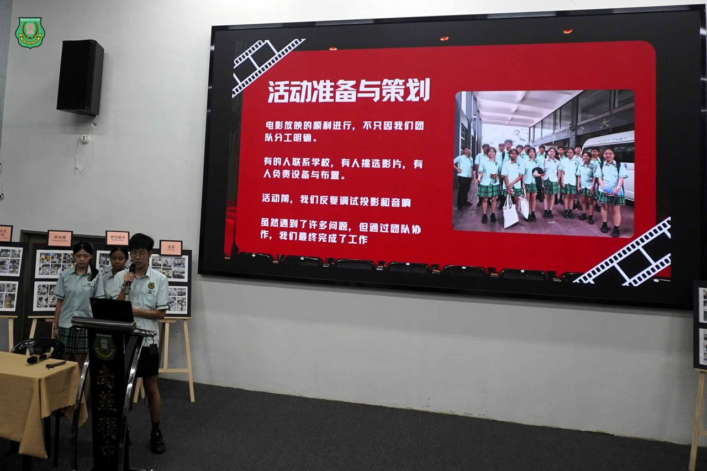
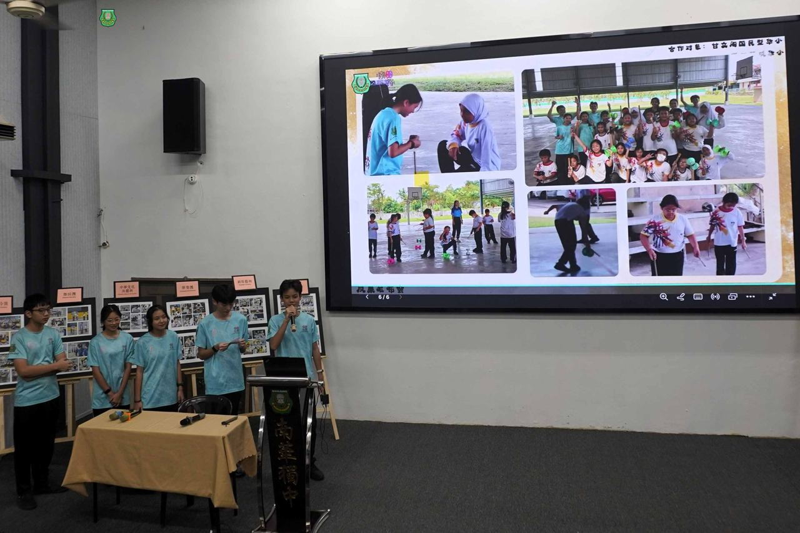
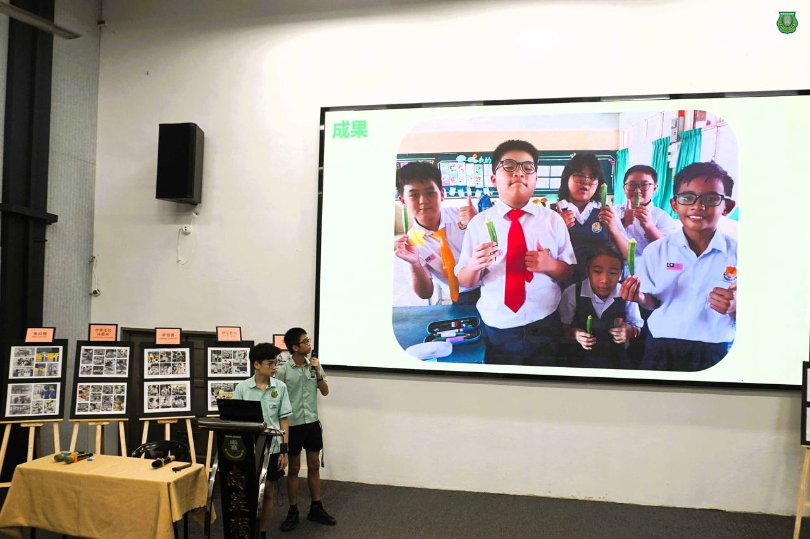

南华独中 11学会团体
南华独中 11学会团体
走进8所华小履行社会服务
成果发表会温馨交流
（曼绒15日讯） 南华独中于本月举办“2025年社会责任行动计划成果发表会”，为本校十一项学会团体在八所曼绒县华小执行的社会责任项目作年度总结。本次发表会是该计划的验收阶段，合作学校校长、副校长及育伯乐讲堂代表皆出席参与，与学生一同回顾行动历程。
活动伊始，董事长颜登逸在欢迎词中表示，如今教育不再仅仅扮演知识传授的角色，而本校推动社会责任行动计划，旨在让学生走入真实校园场域，在行动中理解教育与社会之间的连结。他感谢各合作学校在过去数月中提供空间与协助，使学生得以完成计划书撰写、课程设计与现场执行等重要环节。
校长陈丽冰博士在致辞中肯定学生在行动计划中的投入，指出“没有每一位学生、老师与合作学校的齐心协力，就不会有今天的成果。”她表示，学生在过程中实践了责任、合作与耐力，而今天的成果发表会正是所有努力汇聚后的呈现。她感谢八所华小愿意共同承担教育工作，使“社会责任”在不同校园之间得以被真实看见。
本次成功对接并成功完成社会服务的学会团体包括电影学会、农业与科技学会、扯铃学会与摄影学会发表、棋社、中华文化与艺术学会、舞蹈团、廿四节令鼓、剧场艺术学会、华乐团与射箭学会。
拉惹依淡培民华小王治翔校长分享合作心得。他表示，华小师生在参与过程中也学习许多，透过与南华学生的接触，理解校际合作并非单向给予，而是共同成长的过程。他认为，各校都是社会责任工作的一份子，盼望未来能持续合作，将经验深化为教育常态。
大会也邀请董事总务何添胜总结。他感谢八所华小愿意支持本校学生走出校园、进入现场完成任务。他强调，社会责任行动计划不应是一次性的活动，而应成为持续性的学习传统，并呼吁学生在来年继续延续服务精神，让行动计划在更广的合作中持续发展。
发表会当天亦进行拨款移交仪式。霹雳州行政议员吴家良宣布拨款 RM15,000 支持南华独中的社会责任行动计划，并现场移交支票予董事长颜登逸。他指出，南华独中的计划展现主动承担社会使命的精神，值得在霹州各地推动。
本年度合作的学校包括爱大华华小、港口革成华小、甘文阁国民华小、新甘光国民华小、拉惹依淡培民华小、二条路建华华小、福清洋育英华小及木威培青华小。各学会团队自八月至十一月间完成不同主题活动，累计执行超过二十场，涵盖技能教学、文化体验、艺术课程、生态学习及校园协作等内容。
社会责任行动计划成果发表会不仅是行动的总结，也是下一阶段合作的起点。校方将根据今年的执行经验，在来年继续推动跨校协作，持续优化计划结构，使“社会责任行动计划”成为学校长期性的教育工程。当日活动邀请社区附近的淡米尔学校出席观摩，为来年的社会服务进行初步沟通与接洽事宜。
现场出席者包括董事会副总务林道祥以及董事叶绍龙。







